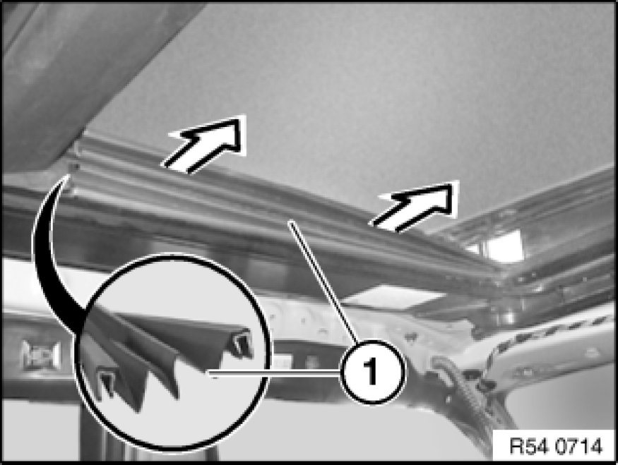

54 12 015 Replacing Left or Right Gaiter For Glass Slide/Tilt Sunroof
54 10 160 - Replacing left or right gaiter for glass slide/tilt sunroof

Necessary preliminary tasks:
- Close glass slide/tilt sunroof

Detach gaiter (1) from guide.
Installation:
Gaiter cannot be removed without incurring damage.
Replace gaiter.
Check that aluminium section inlay is firmly seated on guide.